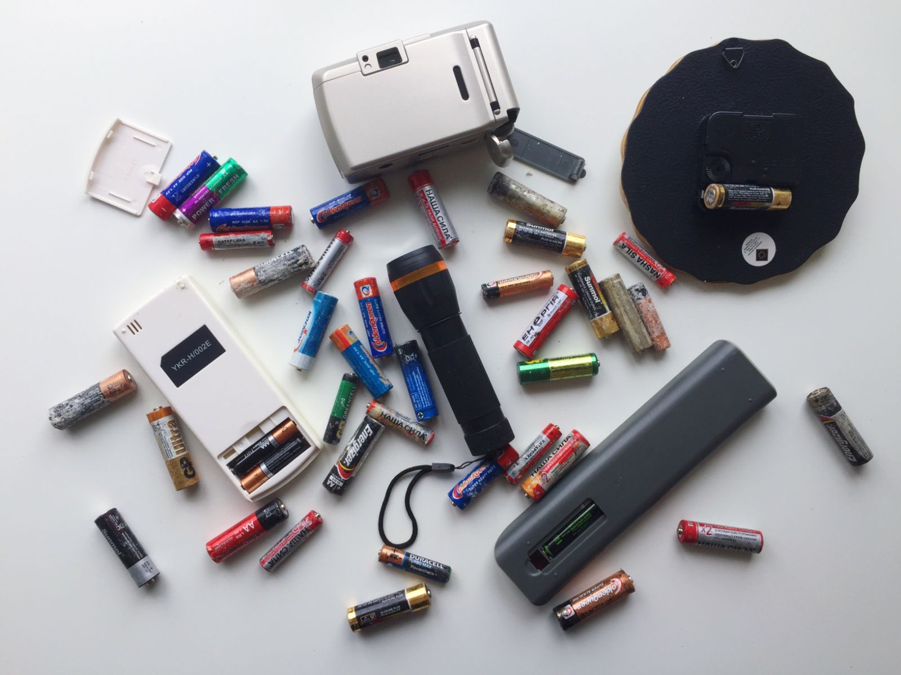

Що являють собою батарейки
Батарейки – невід’ємна частина життя практично кожної людини. Саме на них базується робота стільникових телефонів, ноутбуків, різноманітних дитячих іграшок. До того ж вони забезпечують роботу пристроїв, що працюють від мережі, при відключенні електроенергії.
Батарейки бувають сухими, літієвими, лужними. Незважаючи на удавану зовнішню простоту, ці маленькі автономні джерела живлення влаштовані досить складно. Під металевим корпусом ховаються пастоподібний електроліт, графітовий стрижень. Вкрай складно уявити собі, який шкода від батарейок для навколишнього середовища, особливо від речовин, що містяться у відпрацьованих батарейках.